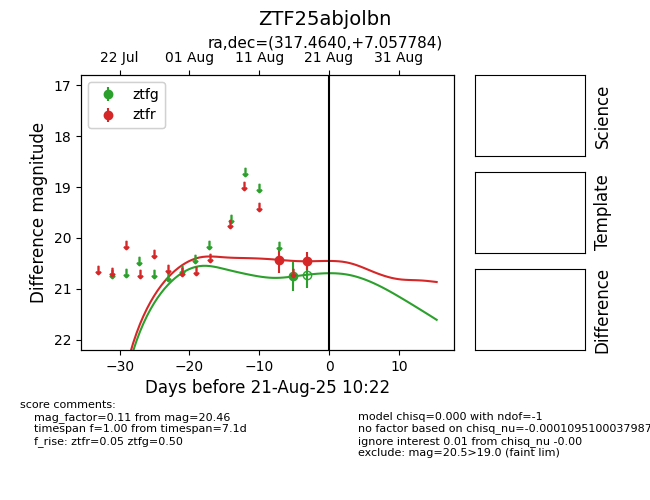

Target ZTF25abjolbn at 2025-08-21 10:22, see:
FINK: fink-portal.org/ZTF25abjolbn
Lasair: lasair-ztf.lsst.ac.uk/objects/ZTF25abjolbn
ALeRCE: alerce.online/object/ZTF25abjolbn
alt names
ZTF25abjolbn (ztf,alerce)
coordinates:
equatorial (ra, dec) = (317.4640,+7.05778)
galactic (l, b) = (57.0875,-26.46017)
photometry
last ztfg=20.76, ztfr=20.46
1 ztfg, 2 ztfr detections
